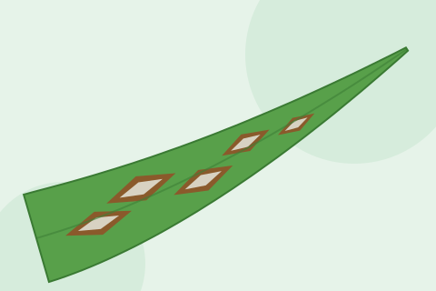
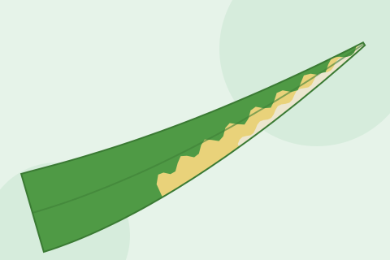

دھان کا بلاسٹ (جھلساؤ)
پتوں پر ہیرے جیسی شکل کے دھبے جن کا درمیان سرمئی ہوتا ہے۔ یہ سٹے کی گردن کو بھی گلا سکتی ہے۔
تفصیل دیکھیں
Rice Stripe Virus
دھان کے پتوں پر ہلکی پیلی ٹوٹی ہوئی دھاریاں؛ نئے پتے لٹک کر مرجھا جاتے ہیں؛ پودے چھوٹے اور بالیں کم۔
دھان کا سٹرائپ وائرس پتوں کی لمبائی میں ٹوٹی ہوئی ہلکی پیلی یا سفید دھاریاں بناتا ہے اور پودے چھوٹے رہ جاتے ہیں۔ چھوٹے پودوں میں سب سے نیا پتہ لپٹا رہتا ہے، لمبا ہوتا ہے، پھر لٹک کر مڑ جاتا ہے اور مر سکتا ہے۔ یہ وائرس صرف پلانٹ ہاپر پھیلاتے ہیں، خاص طور پر چھوٹا بھورا تیلا (Laodelphax striatellus)۔ یہ کیڑا ساری عمر وائرس رکھتا ہے اور اپنے زیادہ تر انڈوں میں منتقل کر دیتا ہے۔ یہ گندم، مکئی اور بہت سی گھاسوں پر بھی رہتا ہے۔
یہ بیماری مشرقی ایشیا میں، خاص طور پر جاپان، چین اور کوریا میں، بڑا مسئلہ ہے۔ پاکستان میں اس کی کوئی رپورٹ نہیں۔ چھوٹا بھورا تیلا پاکستان کے پنجاب میں پہلی بار 2020 میں ریکارڈ ہوا، مگر یہ وائرس یہاں نہیں پایا گیا۔ پاکستان میں دھان کے پتوں پر دھاریاں یا پیلا پن زیادہ تر زنک کی کمی (خیرہ)، ٹنگرو یا بیکٹیریائی دھاریوں سے ہوتا ہے۔ اگر علامات اس صفحے سے ملتی ہوں اور عام وجوہات نہ ہوں تو محکمہ زراعت کو اطلاع دیں تاکہ نمونوں کا ٹیسٹ ہو سکے۔
اصل وجہ: رائس سٹرائپ وائرس (ٹینوی وائرس) جسے چھوٹا بھورا تیلا (پلانٹ ہاپر) Laodelphax striatellus پھیلاتا ہے۔
ماہر کو کب بلائیں: اگر دھان کے بہت سے چھوٹے پودوں پر لٹکتے نئے پتوں کے ساتھ ہلکی دھاریاں ہوں جن کی وجہ زنک کی کمی، ٹنگرو یا بیکٹیریائی دھاریاں نہ ہوں، تو محکمہ زراعت کو اطلاع دیں، کیونکہ یہ وائرس پاکستان میں معلوم نہیں۔
منتقلی کے جلد بعد ٹکڑوں میں زنگ جیسے بھورے دھبے اور نئے پتوں کی ہلکی بنیاد؛ زنک ڈالنے سے پودے ٹھیک ہو جاتے ہیں۔
سروں سے شروع ہو کر پیلے سے نارنجی پتے اور ٹکڑوں میں چھوٹے پودے؛ سبز تیلے سے پھیلتا ہے۔
رگوں کے درمیان تنگ، پانی جیسی لکیریں جو پیلی بھوری ہو جاتی ہیں، اکثر رطوبت کے چھوٹے پیلے دانوں کے ساتھ؛ نئے پتے نہیں لٹکتے۔
یہ معلومات صرف عام رہنمائی کے لیے ہیں، تشخیص نہیں۔ ہم کبھی دوائی کی مقدار نہیں بتاتے۔ ہمیشہ اپنے مقامی زراعت افسر کے مشورے پر عمل کریں۔ حوالے انگریزی میں ہیں۔ آخری تبدیلی: اکتوبر 2026۔
مزید جانیں

پتوں پر ہیرے جیسی شکل کے دھبے جن کا درمیان سرمئی ہوتا ہے۔ یہ سٹے کی گردن کو بھی گلا سکتی ہے۔
تفصیل دیکھیں
پتے نوک اور کناروں سے سوکھتے ہیں، اور ان پر لہر دار پیلی سے سفید دھاریاں بنتی ہیں۔
تفصیل دیکھیں
دھان کے پتوں اور دانوں کے چھلکے پر سرمئی درمیان اور سرخی مائل بھورے کنارے والے بیضوی بھورے دھبے۔
تفصیل دیکھیں